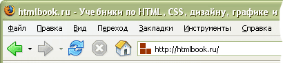

Для выполнения даного домашнего задания использывались теги и их атрибуты, а также спецсимволы, которые представлены ниже.
<!DOCTYPE> <html> <head> <body> <meta> <title> <font> <a> <p> <img>
Элемент <!DOCTYPE> предназначен для указания типа текущего документа — DTD (document type definition, описание типа документа). Это необходимо, чтобы браузер понимал, как следует интерпретировать текущую веб-страницу, поскольку HTML существует в нескольких версиях, кроме того, имеется XHTML (EXtensible HyperText Markup Language, расширенный язык разметки гипертекста), похожий на HTML, но различающийся с ним по синтаксису. Чтобы браузер «не путался» и понимал, согласно какому стандарту отображать веб-страницу и необходимо в первой строке кода задавать <!DOCTYPE>.
Существует несколько видов <!DOCTYPE>, они различаются в зависимости от версии языка, на которого ориентированы. В табл. 1. приведены основные типы документов с их описанием.
Тег <html> является контейнером, который заключает в себе все содержимое веб-страницы, включая теги <head> и <body>. Открывающий и закрывающий теги <html> в документе необязательны, но хороший стиль диктует непременное их использование. Как правило, тег <html> идет в документе вторым, после определения типа документа (Document Type Definition, DTD), устанавливаемого через элемент <!DOCTYPE>. Закрывающий тег <html> должен всегда стоять в документе последним.
Тег <head> предназначен для хранения других элементов, цель которых — помочь браузеру в работе с данными. Также внутри контейнера <head> находятся метатеги, которые используются для хранения информации предназначенной для браузеров и поисковых систем. Например, механизмы поисковых систем обращаются к метатегам для получения описания сайта, ключевых слов и других данных.
Содержимое тега <head> не отображается напрямую на веб-странице, за исключением тега <title> устанавливающего заголовок окна веб-страницы.
Внутри контейнера <head> допускается размещать следующие элементы: <base>, <basefont>, <bgsound>, <link>, <meta>, <script>, <style>, <title>.
Элемент <body> предназначен для хранения содержания веб-страницы (контента), отображаемого в окне браузера. Информацию, которую следует выводить в документе, следует располагать именно внутри контейнера <body>. К такой информации относится текст, изображения, теги, скрипты JavaScript и т.д.
Тег <body> также применяется для определения цветов ссылок и текста на веб-странице. Подобная практика в HTML 4 осуждается и взамен для указания цветовой схемы рекомендуется использовать стили, применяя их к селектору BODY. Тем не менее, большинство атрибутов до сих пор поддерживается разными браузерами.
Часто тег <body> используется для размещения обработчика событий, например, onload, которое выполняется после того, как документ завершил загрузку в текущее окно или фрейм.
Открывающий и закрывающий теги <body> на веб-странице не являются обязательными, однако хорошим стилем считается их использование, чтобы определить начало и конец HTML-документа.
<meta> определяет метатеги, которые используются для хранения информации предназначенной для браузеров и поисковых систем. Например, механизмы поисковых систем обращаются к метатегам для получения описания сайта, ключевых слов и других данных. Разрешается использовать более чем один метатег, все они размещаются в контейнере <head>. Как правило, атрибуты любого метатега сводятся к парам «имя=значение», которые определяются ключевыми словами content, name или http-equiv.
Тег <title> oпределяет заголовок документа. Элемент <title> не является частью документа и не показывается напрямую на веб-странице. В операционной системе Windows текст заголовка отображается в левом верхнем углу окна браузера (рис. 1). Допускается использовать только один тег <title> на документ и размещать его в контейнере <head>.

Рис.1. Вид заголовка в браузере
Тег <font> представляет собой контейнер для изменения характеристик шрифта, таких как размер, цвет и гарнитура. Хотя этот тег до сих пор поддерживается всеми браузерами, он считается устаревшим и от его использования рекомендуется отказаться в пользу стилей.
Тег <a> является одним из важных элементов HTML и предназначен для создания ссылок. В зависимости от присутствия атрибутов name или href тег <a> устанавливает ссылку или якорь. Якорем называется закладка внутри страницы, которую можно указать в качестве цели ссылки. При использовании ссылки, которая указывает на якорь, происходит переход к закладке внутри веб-страницы.
Для создания ссылки необходимо сообщить браузеру, что является ссылкой, а также указать адрес документа, на который следует сделать ссылку. В качестве значения атрибута href используется адрес документа (URL, Universal Resource Locator, универсальный указатель ресурсов), на который происходит переход. Адрес ссылки может быть абсолютным и относительным. Абсолютные адреса работают везде и всюду независимо от имени сайта или веб-страницы, где прописана ссылка. Относительные ссылки, как следует из их названия, построены относительно текущего документа или корня сайта.
Тег <p> является блочным элементом, всегда начинается с новой строки, абзацы текста идущие друг за другом разделяются между собой отбивкой. Величиной отбивки можно управлять с помощью стилей. Если закрывающего тега нет, считается, что конец абзаца совпадает с началом следующего блочного элемента.
Тег <img> предназначен для отображения на веб-странице изображений в графическом формате GIF, JPEG или PNG. Адрес файла с картинкой задаётся через атрибут src. Если необходимо, то рисунок можно сделать ссылкой на другой файл, поместив тег <img> в контейнер <a>. При этом вокруг изображения отображается рамка, которую можно убрать, добавив атрибут border="0" в тег <img>.
Рисунки также могут применяться в качестве карт-изображений, когда картинка содержит активные области, выступающие в качестве ссылок. Такая карта по внешнему виду ничем не отличается от обычного изображения, но при этом оно может быть разбито на невидимые зоны разной формы, где каждая из областей служит ссылкой.